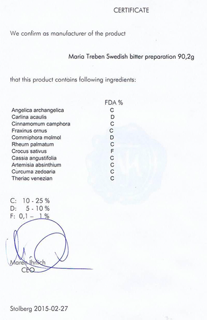

Swedish Bitter
«Swedish bitter»
бальзамНе имеет аналогов в мире по оздоровительной силе и широте лечебных свойств
-
1978 г.
Европейцы используют бальзам «Swedish Bitter»
еще с 1978 года -
104 года
104 года прожил
автор бальзама -
40 показаний
Больше 40 показаний
к применению -
24 языка
8 млн книг на 24 языках продано о бальзаме
Что из этого списка вы находите у себя?
- Сниженный тонус, не хватает энергии
- Прыщи, бородавки и растяжки
- Слабая память и концентрация
- Болеете чаще раза в год?
- Головные боли
- Синяки, шишки, ожоги, порезы
долго не проходят - Плохо засыпаете и часто
просыпаетесь
Почему бальзам «Swedish Bitter» завоевал такую популярность?
Даже в странах с очень высоким уровнем медицины, таких как Германия и Австрия,бальзам Шведская Горечь продается в каждой аптеке!
Получить средство-панацею к себе в аптечкуВот лишь несколько причин:
- Эффективность как при наружном, так и внутреннем применении, более 40 показаний к применению
- Случаи излечения с помощью сбора, когда
традиционная медицина не смогла помочь - Постоянно выявляются новые целительные свойства бальзама
- Эффект от применения можно увидеть сразу
Что вы получите вместе с бальзамом «Swedish Bitter»?
- сбор трав
- инструкция по применению
- сертификат качества
-
Корень дягила (дудника) лекарственного
-
Колючник бесстебельный
-
Натуральная камфора
-
Высушенный сок из ствола ясеня манного
-
Мирра горькая
-
Смесь трав по рецепту Марии Трэбэн
Состав бальзама «Swedish Bitter»
- Все травы, входящие в сбор, собраны в альпийском заповеднике "Гуркталь" и имеют немецкий сертификат качества.
- Строго выверенные пропорции каждого компонента
в составе - Все травы в составе бальзама обладают сильным очищающим воздействием, при этомкаждый из компонентов усиливает действие остальных.
- Соединяясь вместе они создают мощный очищающий эффект. Как оказалось,имеено за счет этого эффекта бальхам способен исцелять многие болезни.
Гарантия качества
Если бальзам вам не понравится, мы вернем деньги. Сразу и без лишних вопросов. Мы дорожим своей репутацией и уверены в продукте на 100%
Этот эликсир – именно то средство, которое вам всегда захочется иметь дома в аптеке и рекомендовать своим близким.
К каждой упаковке бальзама "Swedish Bittner" мы прикладываем немецкий сертификат качества.
заказать бальзам